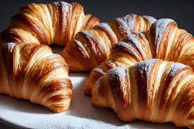

1.Ponemos el horno a 180 grados, dejamos calentar.
2.Cogemos la masa de hojaldre y la estiramos despacio que nose rompa.
3.Con un cuchillo hacemos triángulos largos.
4.Vamos hacemos un pequeño corte en la parte gruesa en la mitad. Y añadimos la Nocilla
5.Enrollamos sin hacer presión y los ponemos en el papel de hornear. Batimos un huevo y se lo añadimos por todo el cruasán y eso lo pondrá con color. Añadimos un poco de azúcar y al horno
6.Para terminar una vez hechos los crusanes añadimos un poco de azúcar glass